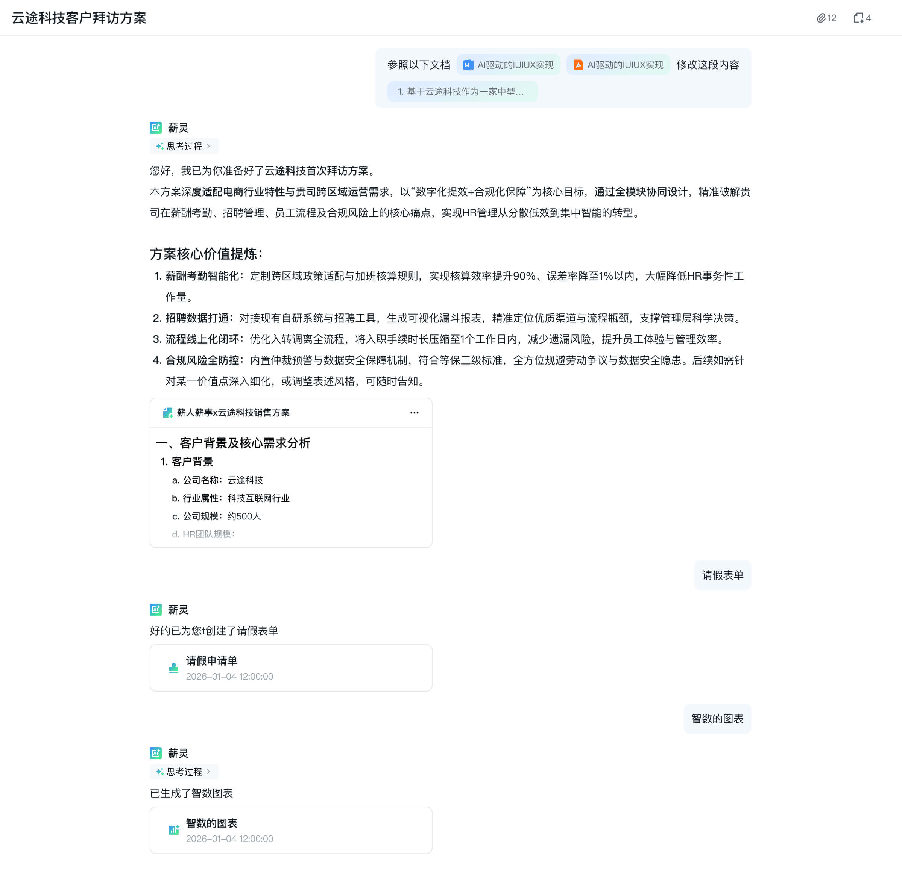

← → 翻页 · ESC 索引 · qjyd-corp v0.1
薪
XINRENXINSHI · SaaS HR PLATFORM
企家有道网络技术 (北京) 有限公司
薪人薪事
智能人力中台
一站式打通招聘、入转调离、薪酬绩效与组织发展，
让 HR 从重复工作中解放，把时间留给战略与人。
立即了解 →
预约产品 Demo
12,000
+
服务企业
3,000,000
+
HR 用户
98
%
客户续约率
薪人薪事 · 产品介绍
2026 · QJYD-CORP · PAGE 01
02
CHAPTER
产品架构 ·
从招聘到组织发展
一个平台覆盖人力资源全生命周期，HR、员工、管理者三端协同，数据全程在线。
04
MODULES
薪人薪事 · 产品介绍
2026 · QJYD-CORP · PAGE 04
AGENDA · 今天聊什么
六个章节，看懂薪人薪事
01
为什么是 HR SaaS
行业拐点 · 数智化必然
02
产品全景架构
招聘 / 入转调离 / 薪酬 / 培训
03
薪灵 AI · 智能助手
查数 / 办事 / 读会
04
客户实战案例
3 行业 · 5 客户故事
05
实施方案 & 报价
3 周上线 · 5 种规模
06
Q & A
现场答疑 + 下一步
薪人薪事 · 产品介绍
2026 · QJYD-CORP · PAGE 05
CHAPTER 02 · KEY METRIC
客户业务效率提升
新消费 · 独角兽
500 人规模
招聘模块
65
%
招聘流程平均缩短
引入前
18
天
→
6.3
天
引入后
CASE STUDY
某新消费独角兽 · 500 人规模
引入薪人薪事招聘模块后, 从简历入库到 offer 发放的平均周期从 18 天压缩到 6.3 天, 跨部门协作摩擦显著降低。
简历自动解析 · 智能去重与画像匹配
面试官分时段在线协同, 评分实时同步
Offer 审批走电子流, HR 不再追着签字
薪人薪事 · 产品介绍
2026 · QJYD-CORP · PAGE 02
PROOF · 数据说话
十年深耕，被三百万 HR 信赖
12,000
+
服务企业
覆盖互联网、新消费、智能制造、生物医药等 30+ 行业
65
%
招聘流程缩短
从简历到 offer 平均周期由 18 天压缩至 6.3 天
98
%
客户续约率
连续 5 年保持行业 Top 1 的续约口碑
薪人薪事 · 产品介绍
2026 · QJYD-CORP · PAGE 06
MILESTONES · 十年来路
从工具到平台，再到智能中台
2015
薪人薪事 v1
从薪酬计算切入
SaaS 化交付
2018
人事全模块
入转调离 +
组织架构在线
2021
招聘 & 绩效
一体化人才管理
2024
薪灵 AI 上线
对话式 HR 助手
2026
智能人力中台
Agent + 数据 +
知识三位一体
薪人薪事 · 产品介绍
2026 · QJYD-CORP · PAGE 07
MODULES · 四大核心模块
一个平台，覆盖人力资源全场景
招聘管理
从 JD 发布到 offer 发放, 智能解析简历, 自动评分匹配, 跨部门协同面试
JD 发布
简历智能解析
面试官协同
Offer 电子流
RECRUIT
人事档案
入转调离全流程电子化, 组织架构实时同步, 自动生成证明合同
e-Onboarding
组织架构
证明/合同
员工自助
HR
薪酬绩效
个税社保自动算, OKR / KPI 一键发起, 与考勤数据闭环联动
薪资计算
个税社保
OKR/KPI
考勤闭环
PAYROLL
薪灵 AI
对话式 HR 助手, 自然语言查数办事, 会议自动纪要, 政策一问即答
对话查数
自然语言办事
AI 听记
政策问答
AI
薪人薪事 · 产品介绍
2026 · QJYD-CORP · PAGE 08
PRODUCT MODULE · 03
薪灵 AI · 你的智能 HR 助手
薪灵是内嵌在薪人薪事中的对话式 AI 入口, 用自然语言完成数据查询、政策解读、流程发起。
三大能力
查数
· 「上月入职几人?」直接给出数字 + 趋势图
办事
· 「帮我发起调岗审批」生成表单待你确认
读会
· AI 听记自动生成会议纪要与待办
体验薪灵 →
已服务 12,000+ 企业
占位写法见 C09 .ih-right ============================================================ -->

薪人薪事 · 产品介绍
2026 · QJYD-CORP · PAGE 03
CUSTOMER STORY · 01
某新消费独角兽
从手工到智能
500 人规模, 全国 18 城市分布。引入薪人薪事 3 个月后, 入离职流程从 5.2 天压缩到 0.8 天。
新消费
500 人
18 城
3 周上线
6.5
×
HR 团队人均效能提升
查看完整案例 →
客户案例图占位
替换为 ./images/04-customer.jpg
建议团队合影或办公场景, 1200 × 1440 px
薪人薪事 · 产品介绍
2026 · QJYD-CORP · PAGE 09
“
用薪人薪事最让我意外的不是省了多少时间,
而是让 HR 团队第一次有精力去做
真正影响业务的事
。
L
李晓东
某新消费集团 · CHO · 2026.03
薪人薪事 · 产品介绍
2026 · QJYD-CORP · PAGE 10
COMPARE · 一图看清差异
为什么选薪人薪事
传统人工
招聘周期
18 天
薪酬出错率
3.8%
流程审批
线下追签
数据洞察
月度报表
AI 能力
无
同类 SaaS
招聘周期
11 天
薪酬出错率
0.6%
流程审批
单系统电子流
数据洞察
仪表盘
AI 能力
仅文档问答
薪人薪事
招聘周期
6.3 天
薪酬出错率
0.02%
流程审批
一键发起 + 智能路由
数据洞察
实时 +
趋势预测
AI 能力
薪灵 Agent
查办读三能力
RECOMMENDED
薪人薪事 · 产品介绍
2026 · QJYD-CORP · PAGE 11
TEAM · 我们是谁
三百人的产品 · 研发 · 服务团队
常
常兴龙
创始人 & CEO
连续创业者, 北大 MBA, 12 年企业服务经验, 致力于让 HR 工作更智能。
王
王 涛
联合创始人 & CTO
前阿里 P9, 主导过千万级 SaaS 系统架构, 让薪人薪事可承载亿级数据。
李
李静雯
CPO · 产品负责人
10 年 HR SaaS 产品经验, 主导薪灵 AI 从 0 到 1 落地。
陈
陈晓东
VP of Customer Success
前华为铁三角, 12,000+ 客户实施服务体系的搭建者。
薪人薪事 · 产品介绍
2026 · QJYD-CORP · PAGE 12
STATEMENT · 阶段性结论
机器多承担一点，
人工才有空间创造
。
智齿独立承接率达
93%
· 创 Q2 单周新高
人工工时人效
93.97%
· 时间进度 79.12%
知识自沉淀 3.0 上线 ·
85%
可直接入库
下一步 · 把客服助手与小薪 / 知识库联动起来
WEEKLY · 2026.06.12
客户服务部 · 内部同步
薪人薪事 · 产品介绍
2026 · QJYD-CORP · PAGE 14
PROGRESS · 知识自沉淀 3.0
本周成果与下一步
DONE · 本周成果
3.0 优化完成
本周正式启用
85%
· 沉淀可直接入库知识占比
100%
· 待人工审核分类准确率
本周起进入正式运营周期
话后批量沉淀已稳定运行
NEXT · 待打通
知识全自动入库
仍差最后一环
低代码平台知识库接口尚未开放
当前依赖
手动上传
完成同步
待开放接口后即可全自动化
计划与平台侧本月内对齐方案
瓶颈不在自沉淀质量, 而在与下游知识库的连接通道。
薪人薪事 · 产品介绍
2026 · QJYD-CORP · PAGE 15
THIS WEEK · 本周完成
六件事，一周交付
01
智齿机器人提效
独立承接率
93%
, chat 有效回答
19,714
条
已完成
02
在线 / 企微双渠道盘点
在线自动化
63.37%
, 企微
2.04%
· 数据已同步
已完成
03
Q2 用户调研推进
已回收
209 / 351
家 · 回收率 59.54%
推进中
04
知识自沉淀 3.0 启用
85% 可入库, 100% 审核准确, 本周正式上线
本周里程碑
05
客服助手基础搭建
实时辅助 / 方案检索骨架完成, 待联动小薪
推进中
06
分层 & 标准化运营终稿
2026 精细化运营方案定稿 · 下周开始执行
已完成
薪人薪事 · 产品介绍
2026 · QJYD-CORP · PAGE 16
END · 谢谢聆听
Thank
You.
期待与您一起, 用智能让 HR 更靠近业务、更靠近人。
官网
www.xinrenxinshi.com
商务合作
hello@xinrenxinshi.com
咨询热线
400-826-8118
薪人薪事 · 产品介绍
2026 · QJYD-CORP · PAGE 13